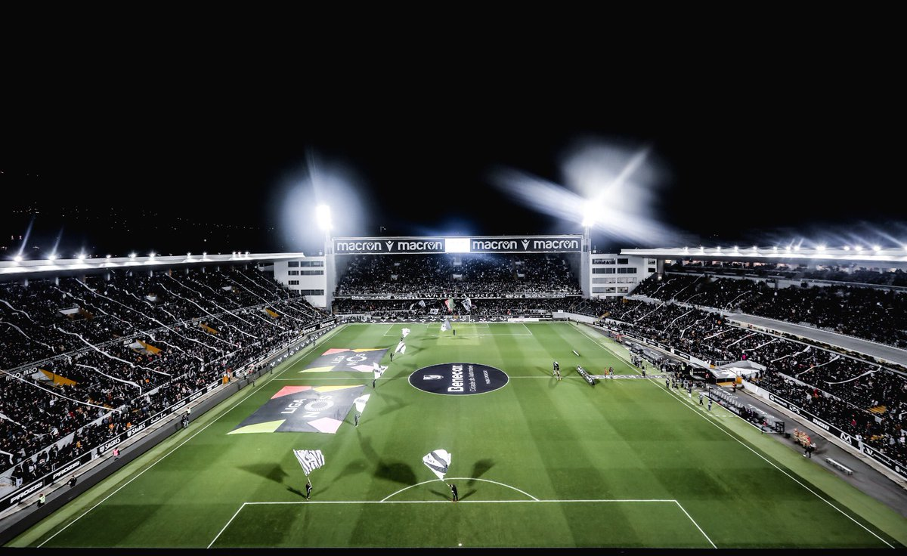
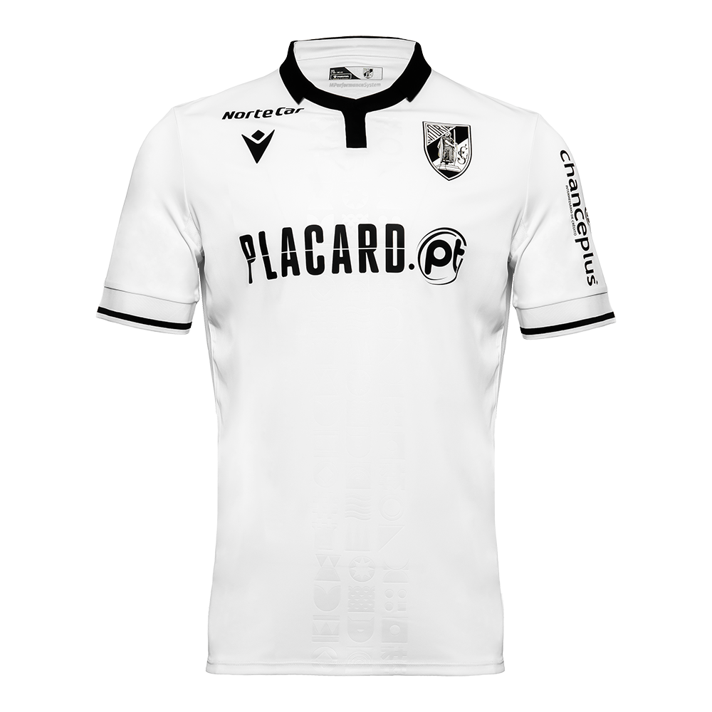
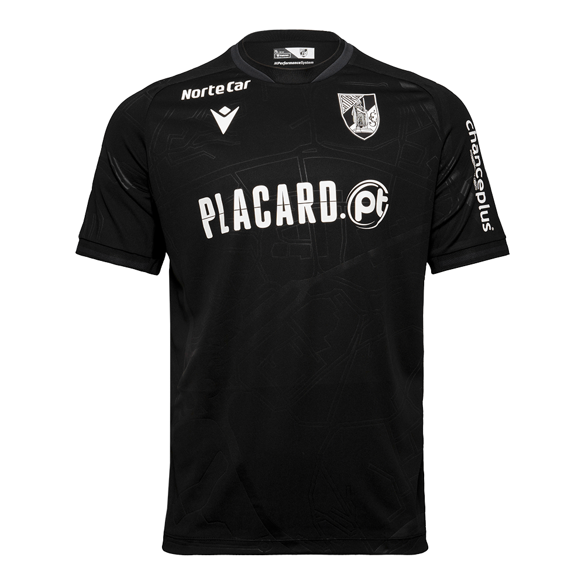

Fundando a 22 de setembro de 1922, o Vitória Sport Clube, popularmente conhecido como Vitória de Guimarães, é um clube multidesportivo sediado na cidade de Guimarães, Portugal. Tem como modalidade principal o futebol distinguindo-se também em modalidades como o voleibol, o basquetebol, o andebol, o futebol de praia, a natação, o polo aquático, o jiu-jitsu, o taekwondo o kickboxing, entre outros. Atualmente milita na Primeira Liga de futebol, onde é o 4.º clube com mais presenças, contabilizando um total de 78 participações no principal escalão da modalidade em Portugal. No seu emblema está representado D. Afonso Henriques, primeiro Rei de Portugal, símbolo que inspira um Clube de conquistadores, de homens destemidos que lutam bravamente pelos seus objetivos. É, por isso, que os atletas do Vitória Sport Clube são, constantemente, apelidados de Conquistadores. As cores do Clube são o preto e o branco que simbolizam a abertura do Vitória Sport Clube para receber todos, sem discriminação de raça ou estatuto social. Ao longo dos anos, o Clube do Rei, como é frequentemente apelidado, tem-se afirmado como um dos principais Clubes portugueses, participando com sucesso em diversas competições nacionais e internacionais.
Estádio D. Afonso Henriques
Situado no coração da cidade, o Estádio D. Afonso Henriques é um local de culto para os vimaranenses. Construído em 1965, então como Estádio Municipal de Guimarães, recebeu, décadas depois, o nome do Rei fundador da nacionalidade a quem presta sentida homenagem
De forma a acolher os jogos do EURO2004, sofreu profundas obras de remodelação que o tornaram num palco de excelência para jogos de futebol. Com capacidade para 30.000 pessoas, assume, a cada época desportiva, um lugar de destaque na tabela de assistências na Liga, sendo um dos estádios portugueses mais mediáticos. O Estádio D. Afonso Henriques é palco de grandes partidas de futebol, é a casa dos melhores adeptos do mundo e um dos monumentos no roteiro de visita da cidade de Guimarães.

Uniformes 2023/24
A camisa titular do Vitória Sport Clube traz a cor branca predominante e apresenta grafismos em relevo juntamente com vários símbolos que fazem referência à identidade cultural portuguesa no centro.
A gola é polo na cor preta, enquanto as mangas são brancas e os punhos brancos com frisos pretos. O escudo do clube está no lado esquerdo do peito, enquanto o logo da Macron está em preto, no lado direito e nos ombros.
O uniforme para jogos como mandante se completa com calção preto e meiões brancos.

O uniforme 2 usa a cor preta e traz em relevo um mapa da cidade na região frontal em embossing. A gola traz construção especial na cor preta, cor também vista nas mangas e punhos. O escudo do time português ganha o lado esquerdo do peito, enquanto o logo da Macron está no lado direito e também nos ombros. O novo uniforme para jogos como visitante se completa com calção branco e meiões pretos.

O uniforme 3 traz uma cor não usual, o laranja e traz em relevo diversas letras “V” aplicadas em embossing. A gola é preta com detalhes brancos no “V” frontal. Os punhos também são pretos. Já o escudo está no lado esquerdo do peito, enquanto os logos da Macron aparecem no lado direito e nos ombros. Na nuca, um brasão é aplicado em embossing com a sigla “VFC”, ele também é visto nos kits anteriores. O uniforme 3 se completa com calção e meiões também na cor laranja.